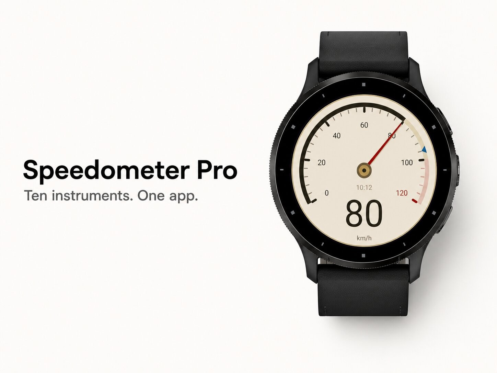
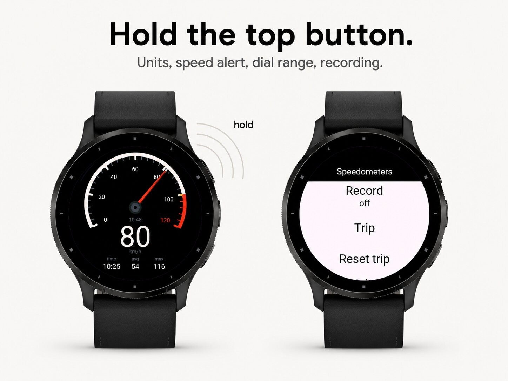
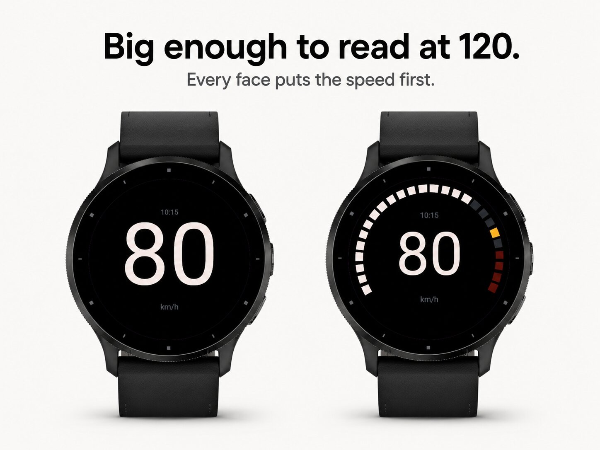
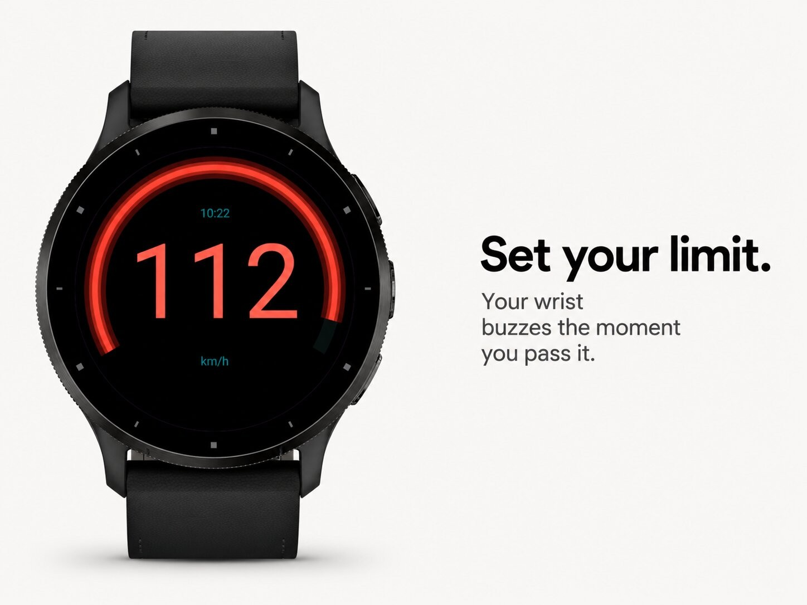
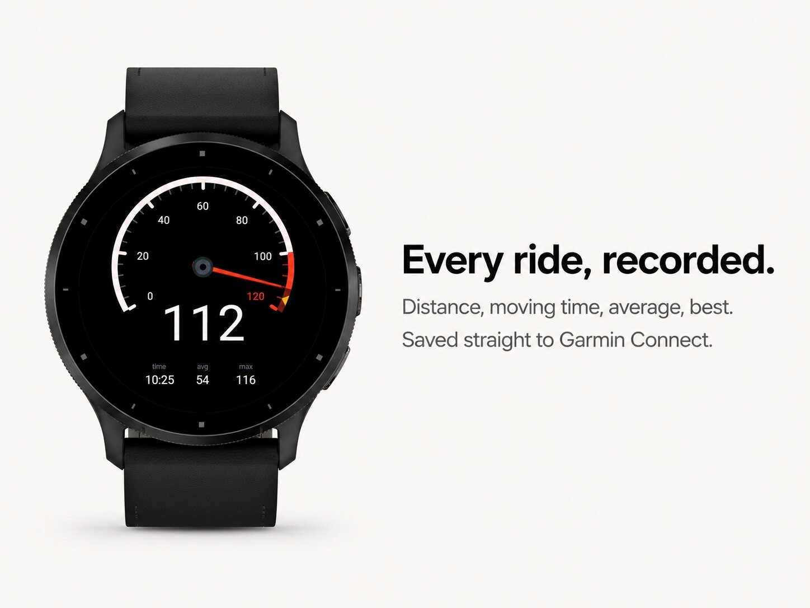

Sport & outdoors · Device app
GPS speedometer with ten instrument faces.





GPS speedometer for your watch, with ten instrument faces.
Classic, Vintage, Sector, Halo, Minimal, Segment, Tape, Ladder, Neon and Panel. A swept dial with a red needle, a cream 1960s dashboard, a seven-segment LCD, an aircraft-style speed tape, or nothing but the number as large as the glass allows.
The top button jumps to the next face. No menu, no scrolling, no waiting.
It does not jump between GPS readings and it does not lag behind them. It leads into a change, overshoots by a hair and settles, exactly like a mechanical instrument.
A second hand stays behind at the fastest moment of your trip, so you always know what you hit.
Set a limit and every face grows a red zone. Cross it and your wrist buzzes once.
Fix the top speed of the dial yourself, or leave it on auto and let it scale to how fast you actually go.
km/h, mph, knots or m/s, whether you are on a bike, a boat, a slope or a motorway.
One swipe up gives you distance, moving time, average speed and top speed.
Start a recording and the whole ride lands in Garmin Connect as a real activity, with the map and speed graph you expect. Pick generic, cycling, skating or skiing as the activity type.
Every face shows the time of day as well.
Tap the screen or hold the top button on the watch, or change everything from Garmin Connect.